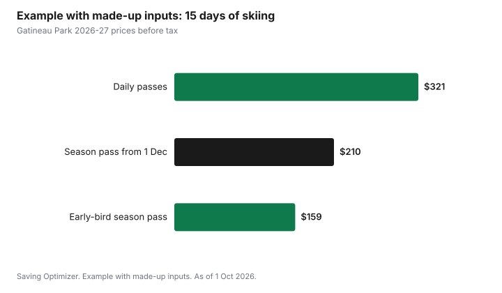

Sports · Canada
Cross-Country Skiing and Snowshoeing on a Budget in Canada: Trail Passes, Rentals and Free Trails
Cross-country skiing and snowshoeing are among the cheapest ways to stay active in a Canadian winter, and the biggest saving is buying a season pass early: at Gatineau Park, for example, an adult ski pass costs $159 plus tax from 15 October to 9 November 2026, $180 until 30 November and $210 from 1 December, as of 1 October 2026. Snowshoeing usually costs even less, and many municipal parks and trails are free. Renting for the first few outings, borrowing a trail pass from a public library where that is offered, and dressing in layers you already own keep a first season to a modest cost.
Key takeaways
- Early-bird season passes are the biggest saving. Gatineau Park's adult ski pass is $159 until 9 November 2026 and $210 from 1 December, plus tax.
- Snowshoe-only passes cost much less: $49 for an adult at Gatineau Park until 9 November 2026.
- Children 12 and under ski Gatineau Park's trails free.
- Some public libraries lend trail passes. In the Ottawa-Gatineau area, a library card can borrow a Gatineau Park daily pass.
- Rent for the first few outings, then buy used or on sale once you know you will keep going.
- Example with made-up inputs: an adult skiing 15 days pays $159 for an early pass instead of $321 in daily passes.
Trail passes: daily or season
Groomed cross-country trails usually charge a trail fee, either daily or for the season. Many are run by non-profit clubs or provincial and national park agencies. Season passes almost always have an early-bird price that rises as winter starts. Gatineau Park, run by the National Capital Commission, publishes its 2026-27 prices clearly:
| Pass | 15 Oct to 9 Nov 2026 | 10 to 30 Nov 2026 | From 1 Dec 2026 |
|---|---|---|---|
| Adult (18 to 59) | $159 | $180 | $210 |
| Student (18+) or senior (60+) | $99 | $114 | $131 |
| Youth (13 to 17) | $88 | $99 | $115 |
| Family (two adults, three youths) | $355 | $410 | $472 |
| Pass | 15 Oct to 9 Nov 2026 | 10 to 30 Nov 2026 | From 1 Dec 2026 |
|---|---|---|---|
| Adult (18 to 59) | $49 | $54 | $62 |
| Student or senior | $39 | $46 | $52 |
| Youth (13 to 17) | $36 | $40 | $48 |
| Family | $112 | $144 | $168 |
| Daily pass | Ski, snowshoe and snow bike | Snowshoe and snow bike only |
|---|---|---|
| Adult (18 to 59) | $21.40 | $12.48 |
| Youth, student or senior | $16.93 | $9.81 |
| Family | $47.25 | $27.63 |
The season pass also includes two free guest day passes, free parking at one location until 31 March 2027, and a 50% discount on day passes at partner centres, including several Sépaq parks in Quebec. Passes are not refundable or exchangeable. Other trail networks across Canada follow a similar pattern, so look for early-bird dates in October and November wherever you ski.
Break-even: when a season pass pays
Divide the season pass price by the daily price. At Gatineau Park, an adult early-bird pass at $159 equals about 7.4 daily passes at $21.40, so it pays for itself on the eighth day. At the December price of $210, it takes about 9.8 days. If you are not sure you will ski that often, start with daily passes and buy a season pass next year.
Borrow a pass from the library
Some public libraries lend passes to parks and trails. In the National Capital Region, libraries including the Ottawa Public Library, the Ville de Gatineau library and several surrounding libraries lend Gatineau Park daily passes with a library card, which makes a first outing free. Library pass programs elsewhere in Canada vary; check your library's website. The guide to free and cheap family outings covers library pass programs more broadly.
Free trails
Many cities and towns groom or pack trails in parks and golf courses for free use in winter. Conservation authorities, provincial parks and community trail groups also maintain winter trails, some free and some with a small fee. Snowshoeing does not need groomed trails at all, so any safe trail with snow, including hiking trails in winter, can work. Respect signs that keep snowshoers off groomed ski tracks.
National parks
Parks Canada places charge admission, though youth 17 and under are free. As of 1 October 2026, daily admission at Banff National Park is $12.25 per adult or $24.50 for a family or group in one vehicle, and an annual Discovery Pass is $83.50 per adult or $167.50 per family or group. Several national parks have groomed or set cross-country trails, and some offer free snowshoe programs; check each park's winter page.
Rent or buy
| Option | Best for | Watch for |
|---|---|---|
| Day rental at the trail centre | First few outings | Availability on busy weekends |
| Seasonal rental | Children who grow each year; new skiers | Return date; condition |
| Buy used | Second season onward | Boot fit; binding compatibility; ski length |
| Buy new on sale | Frequent skiers who know what they want | Classic versus skate gear |
Classic cross-country skiing, in set tracks, is easier to learn and uses less specialized gear than skate skiing. Snowshoes are the simplest of all: one size range fits many adults, and a used pair can last for years. Spring sales and used-gear swaps run by ski clubs are good times to buy.
Clothing: layers you already own
Cross-country skiing and snowshoeing are hard work, so you will be warmer than at a downhill hill. Dress in layers: a base layer that wicks sweat (not cotton), a light insulating layer, and a wind-resistant shell. Add a hat, light gloves and a spare pair, and a warmer jacket for stops. Most people already own enough to start. The guides to winter coats and kids' winter gear cover buying more.
Example with made-up inputs: one adult's first season
The number of days is an example with made-up inputs; the pass prices are Gatineau Park's 2026-27 prices before tax. An adult plans to ski 15 days this winter at Gatineau Park.
| Option | Cost for 15 days |
|---|---|
| Daily passes (15 × $21.40) | $321.00 |
| Season pass bought from 1 December | $210.00 |
| Early-bird season pass (by 9 November) | $159.00 |
Buying early saves $51 compared with the December price and $162 compared with daily passes. Two guest passes included with the season pass add value if a friend or partner comes along.

A plan for the season
- Decide in October whether you will ski or snowshoe enough to pass the break-even point.
- Buy early-bird season passes before the first price step.
- Borrow a library pass or rent gear for a first outing if you are unsure.
- Use free municipal trails on weeknights and keep paid trails for weekends.
- Buy used gear at a spring sale or club swap once you know you enjoy it.
| Item | Your numbers |
|---|---|
| Expected days this winter | |
| Daily pass price | |
| Daily passes total | |
| Season pass price (early-bird) | |
| Season pass price (later) | |
| Cheaper option |
Common mistakes
- Missing the early-bird deadline by a week.
- Buying a season pass for a sport you have not tried.
- Buying skate skis when classic would suit a beginner better.
- Dressing too warmly and getting soaked with sweat.
- Snowshoeing on groomed ski tracks.
Sources
- National Capital Commission, Gatineau Park Winter Passes (ncc-ccn.gc.ca), as of 1 Oct 2026. Season and daily pass prices for 2026-27; price dates; children 12 and under free; season pass benefits; library pass lending; no refunds.
- Parks Canada, Banff National Park fees (parks.canada.ca), as of 1 Oct 2026. Daily admission and Discovery Pass prices; youth free.
- The 15 days in the example table and chart are an example with made-up inputs; pass prices are the published Gatineau Park prices.
Frequently asked questions
How much is a Gatineau Park ski pass for 2026-27?
An adult season pass for cross-country skiing, snowshoeing and snow biking costs $159 from 15 October to 9 November 2026, $180 from 10 to 30 November and $210 from 1 December, plus tax. An adult daily pass is $21.40 plus tax, and children 12 and under are free.
Is snowshoeing cheaper than cross-country skiing?
Usually. Snowshoes are simple and cheap to rent or buy, snowshoe-only passes cost less (an adult Gatineau Park snowshoe season pass is $49 until 9 November 2026), and you can snowshoe on many free trails.
Can I borrow a ski trail pass from the library?
In some places. In the Ottawa-Gatineau area, libraries including the Ottawa Public Library and the Ville de Gatineau library lend Gatineau Park daily passes with a library card. Check your local library for similar programs.
Should I rent or buy cross-country skis?
Rent for your first few outings. If you keep going, a seasonal rental, used gear from a club swap or spring sale, or new gear on sale usually costs less than many daily rentals.
Researched and drafted with AI assistance and fact-checked against official Canadian sources. How we create content.
Disclosure: Saving Optimizer may earn a commission if a partner link is added later, such as an outdoor gear retailer offer type. No partnership with the National Capital Commission, Parks Canada or any retailer is claimed on this page, and no trail network is ranked. Education only.